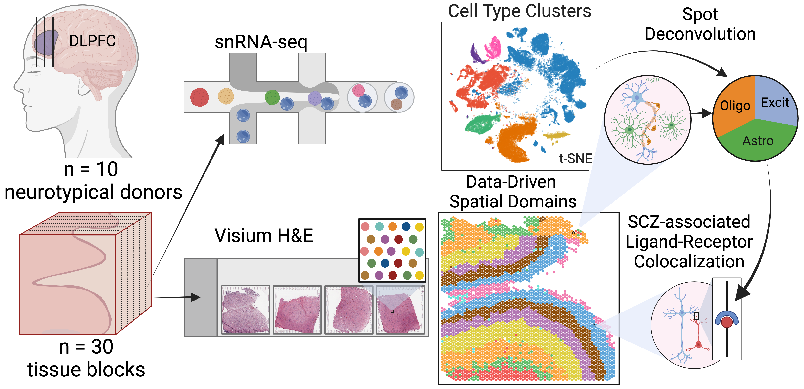
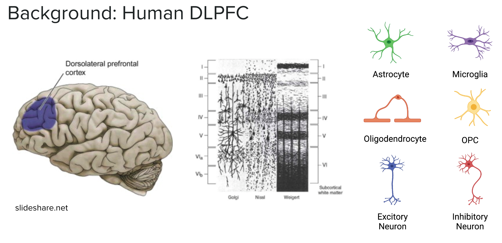
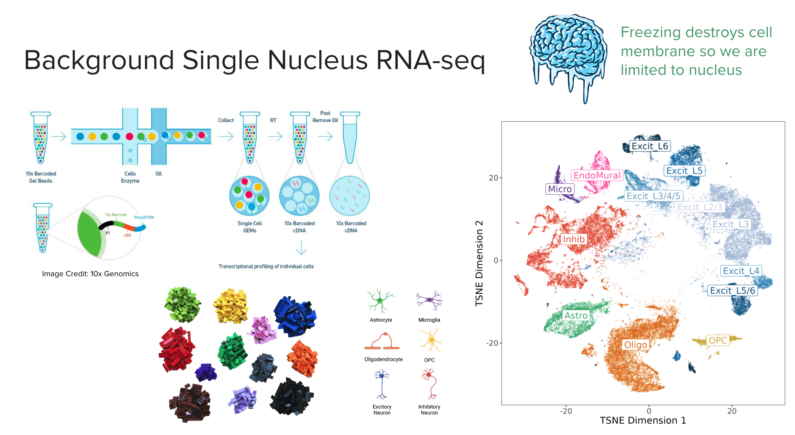
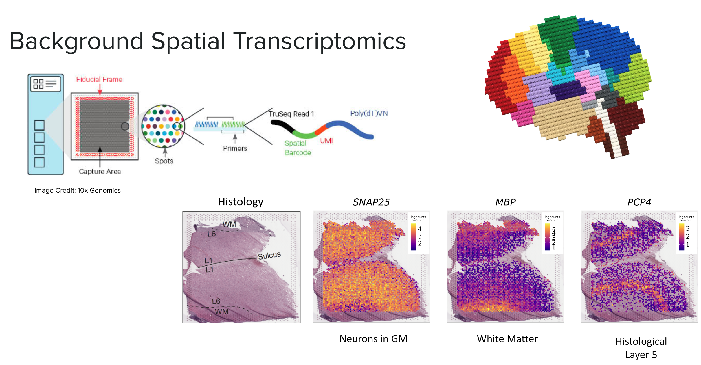
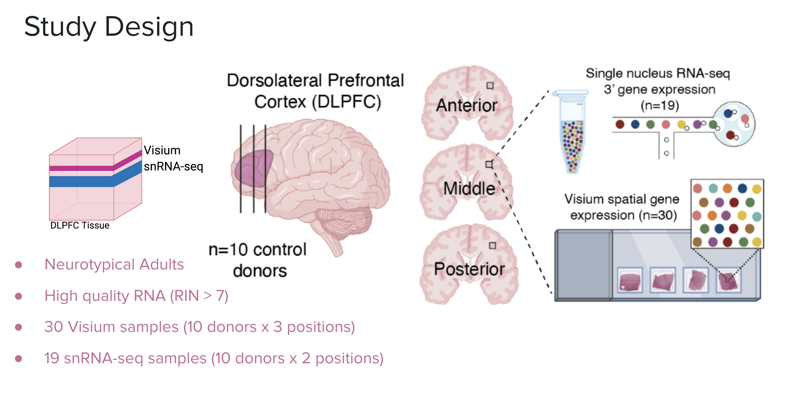
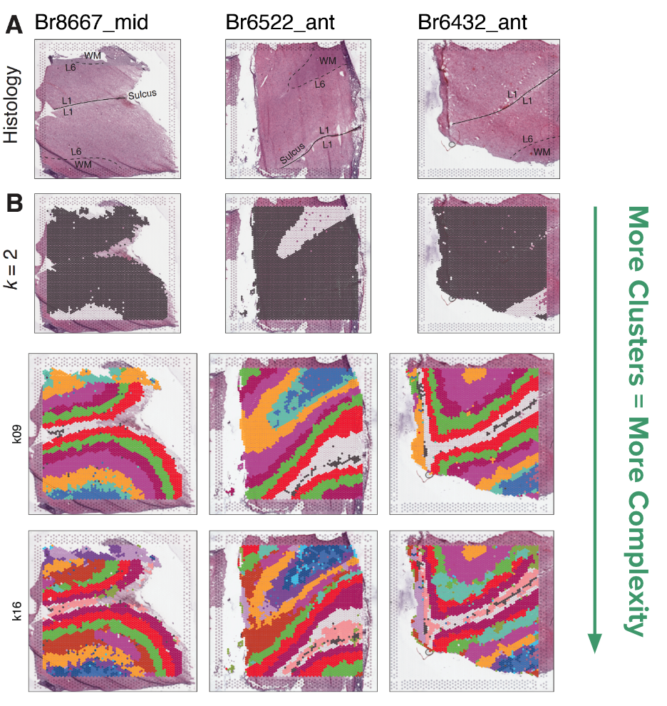
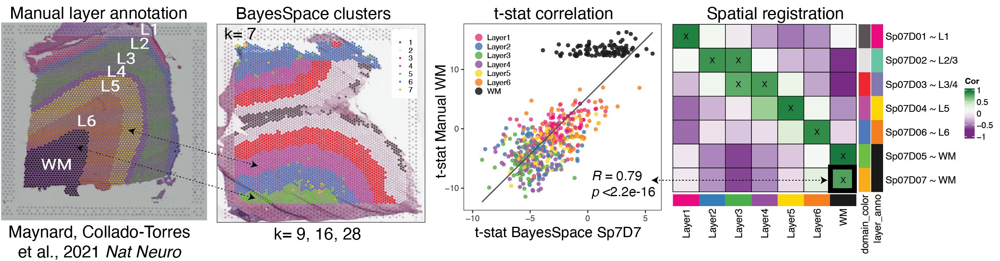
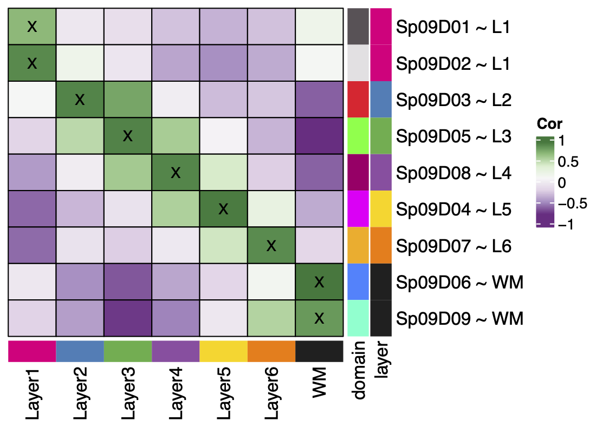
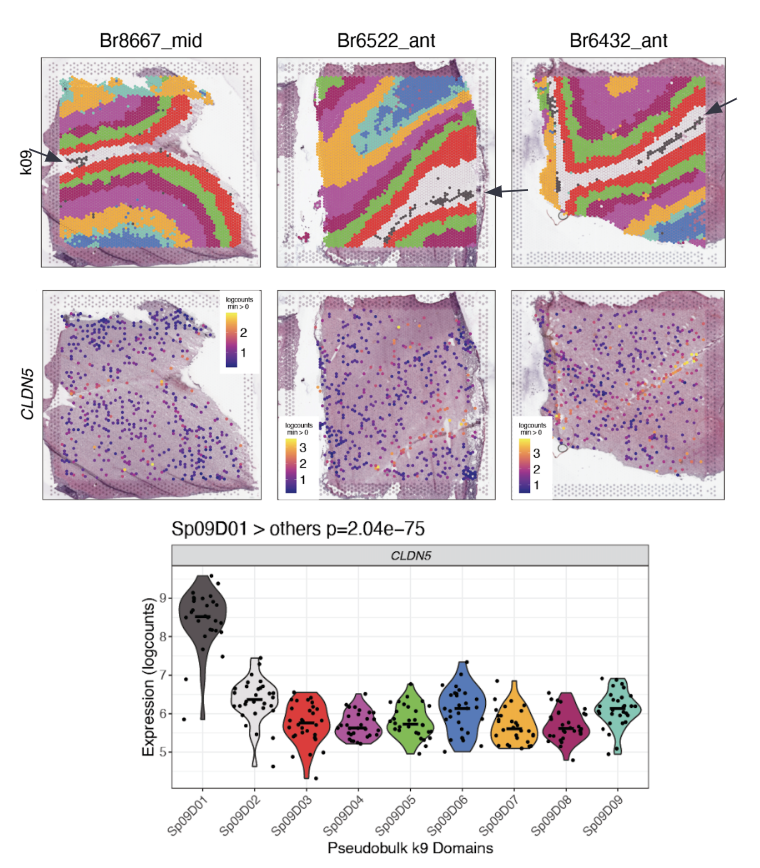

Spatial DLPFC: TL;DR
A highlevel overview of the spatialDLPFC project, now published in Science!
Introduction
This blog post provides a high-level summary of our paper “A data-driven single cell and spatial transcriptomic map of the human prefrontal cortex” published in Science in May 2024 (aka spatialDLPFC).
In the spatialDLPFC project we set out to learn more about the organization of the dorsolateral prefrontal cortex (aka then DLPFC), its cell types, and gene expression profile.

Background
DLPFC
The dorsolateral prefrontal cortex (or the DLPFC) region of the brain is especially important for executive functions including working memory, cognitive flexibility, and planning. Disruptions of the DLPFC have been associated with several psychiatric and neurodevelopmental disorders, including schizophrenia and autism spectrum disorder

RNA-sequencing
One of the ways that we can understand the functions of different cell types and structures in the brain is to study what genes they express by sequencing the RNA in a tissue. (The measurement of RNA transcription is known as “transcriptomics”) Recently, several advanced transcriptomic approaches using RNA sequencing have emerged, enhancing our ability to analyze gene expression in the brain.
This LEGO brain schematic demonstrates the evolution from bulk RNA sequencing, which provides a mixture of cell types, to single cell/single nucleus RNA-seq, which reveals the transcriptional profiles of individual cell types. The latest advancement, spatial transcriptomics, links gene expression to specific anatomical locations, providing deeper insights into the relationships between brain structure and function.
Single Nucleus RNA-seq
Single nucleus or single cell RNA sequencing (snRNA-seq) enables us to examine the gene expression of individual cells or nuclei. This technique relies on uniquely barcoded gel beads that attach to a single cell or nucleus, tagging all RNA molecules from that cell. When sequenced, these tagged RNA molecules can be traced back to their original cell. Cells or nuclei are then typically clustered by their gene expression profiles to identify different cell type populations. The expression profiles and cluster assignments are often visualized using reduced dimension plots such as UMAPs or tSNE. In these plots, each point represents a cell, and the distance between points indicates their similarity; closer points represent more similar cells, which are often of the same cell type (shown by different colors).
In this experiment we are working with nucle,i as the cell membrane is destroyed when the brain tissue is frozen. The major cell type populations to identify in the DLPFC are neurons (Excitatory and Inhibitory), and glial cells (ex: Astrocytes, Microglia, Oligodendrocytes, OPC).

Spatially Resolved Transcriptomics (Visium)
Spatially resolved transcriptomics maps RNA to specific locations on a tissue sample, allowing us to profile gene expression across anatomical features such as blood vessels, glands, or, in our case, layers of the brain’s cortex.
We used Visium slides, which feature a grid of approximately 5,000 spots arranged in a 6.5x6.5 mm area. Each spot has a unique barcode that binds to the RNA in the contacted tissue. When the RNA is sequenced, these molecules can be traced back to their specific grid locations, similar to the barcodes in snRNA-seq.
This RNA-seq data is paired with a high-definition histology image of the original tissue, providing additional information and aiding in data visualization. We can visualize the gene expression of each spot in “spot plots” using color gradients overlaid on these images. In the example below we highlight the location of the gray matter with SNAP25 a gene highly expressed in neurons, MBP highlights white matter, and PCP4 marks layer 5.

Study Design
In this study we analyzed the DLPFC of ten healthy adult donors. We sampled three locations of the DLPFC, the anterior, middle, and posterior. All 30 samples were analyzed with Visium spatial transcriptomics, 19 (about 2 from each donor) were selected for snRNA-seq.

Data-Driven Spatial Domains
An earlier study, from the Lieber Institute, of spatial transcriptomics in the DLPFC (Maynard et al. 2021) relied on manually annotating the known layers of the cortex based on the histological images and the expression of select genes. This dataset has been invaluable for testing methodologies in spatial transcriptomics. However, manual annotation is tedious, time-consuming, and prone to human error and bias.
In our current study, which builds on the previous DLPFC project, we aimed to use unsupervised clustering to annotate the layers of the DLPFC, thereby avoiding the labor-intensive process of manual annotation and potentially discovering novel or unknown layers in the brain.
Based on benchmarking against the manually annotated layer data, we chose the method BayesSpace as the best method for clustering spatial data. We clustered the 30 Visium slides at a large range of resolutions, from k=2 to 28 (k denotes the number of clusters). We refer to these clusters as spatial domains, to name these domains we used the syntax SpkDd, where k is clustering resolution and d is spatial domain number, so Sp9D1 is spatial domain 1 when k=9.
We found that k=2 did a great job separating the white matter from the gray matter. With an increasing number of clusters, the layers of the cortex begin to emerge. This brings us to a question: which level of clustering best captures biologically important layers of the DLPFC?

Spatial Registration of BayesSpace Clusters
To check which resolution of BayesSpace clusters best matches the six histological layers plus white matter, we used a useful analysis we’ve developed called “spatial registration”. We will delve into the details of this analysis in a future blog post, and its application in this vignette.
Briefly this analysis compares the gene expression profile of a reference set of clusters such as spatial regions or domains, annotated features, or cell type populations etc. (in this case the manual annotations from the pilot dataset), to a query set of clusters we want to learn more about (the BayesSpace clusters). The t-statistics from an enrichment analysis in the query and the reference set are correlated, pairwise across all groups. We visualize this in a heatmap where the high correlation is green, low correlation is purple. Where a query cluster has high correlation with a reference cluster, we can say the two groups are associated, and if the correlation passes our threshold we annotate the query group with the reference.
In the below example Sp7D7 has a high correlation with the manual annotation white matter, we then annotate it as Sp7D7~WM. This annotation helps add biological context to our newly defined spatial domains.

From this process we learned that k=9 best reiterated the expected pattern of six layers + white matter, by matching each spatial domain to only one layer. In contrast to the k=7 resolution where some of the spatial domains (Sp7D2 and Sp7D3) matched more than one layer. K=9 split white matter and Layer 1 into two spatial domains with unique gene expression.

For higher resolution clustering, k=16 was determined to be the optimal number of clusters based on the fast H+ statistic, so based on the data this is the best way to cluster the data. This further split the six original layers into 2-3 sublayers each. The maximum number of clusters we could comfortably run on our computing setup was k=28, at this high number of clusters we lose the laminar definition.
Novel Biology in Spatial Domains
So what does all this clustering and layer matching help us learn about the brain?
At each resolution differentially expressed genes were detected between the spatial domains, this shows the complex organization of gene expression across the DLPFC tissue.
The data-driven clustering at k=9 revealed a sub-layer of the white matter with as much difference in gene expression that exists in the previously considered layers. It also found a thin band of vascular tissue (Sp9D1~L1) in layer 1 with high expression for endothelial genes like CLDN5. These were both novel findings resulting from the unsupervised clustering. The sub-layers found in k=16 had distinct gene expression profiles.
These new spatial domains help refine the layered anatomy of the DLPFC. Neat!
